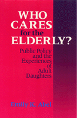

The exploration of family care for disabled elderly people
The exploration of family care for disabled elderly people


 The exploration of family care for disabled elderly people
The exploration of family care for disabled elderly people

|  |
Who Cares for the Elderly?Public Policy and the Experiences of Adult DaughtersEmily K. Abelpaper EAN: 978-0-87722-950-6 (ISBN: 0-87722-950-3) |
Distinguished Contribution to Qualitative Gerontology, American Sociological Association, 1994
"[A] timely exposé of how women are forced to bear extra care-giving burdens by the inadequacy and indifference of U.S. long-term care systems."
—Ms.
Although caregiving is predominantly women’s work, care for the elderly is largely absent from the feminist agenda in this country. Emily K. Abel presents a compelling and sensitive report that describes the experience of caregiving from the perspective of adult daughters. She places their stories in the context of an analysis of existing policies and services for the elderly and traces the history of family caregiving in the U.S. since 1800.
Through in-depth, open-ended interviews with 51 women who were caring for one or both parents, Abel explores how caregivers themselves understand their endeavors. Poignant excerpts from these interviews reveal the overwhelming sense of responsibility that these women feel for their parents’ lives, how they protect their parents’ dignity, and the isolation and lack of support that is faced in these homecare situations. While policy analysts speak of "filial responsibility," Abel allows the adult daughters to interpret its meaning in heart-rending detail.
In her examination of how public policies affect the nature of caregiving at home, Abel argues that the amount of care women deliver to elderly relatives is determined not only by demographic trends but by the inadequacies of the long-term care system in the U.S.
Excerpt available at www.temple.edu/tempress
"As Abel points out, society still expects adult daughters to provide live-in, long-term care for their elderly parents—often at the expense of career and private life.... Some form of financial compensation or relief, support services (transportation, day care centers, etc.), education and therapy groups for caregivers, are among the author's proposals for easing the daughters' burdens."
—Publishers Weekly
Acknowledgments
1. Introduction
2. The Policy Framework of Caregiving
3. Family Care in the United States since 1800
4. Methods of Studying Caregiving
5. The Caregivers' Perspective
6. Mothers and Daughters
7. Work and Leisure
8. Brokering Services
9. The Ambiguities of Social Support
10. An Agenda for Change
Appendix
Bibliography
Index
Emily K. Abel is Adjunct Associate Professor in the School of Public Health at the University of California, Los Angeles. She has published several books and is co-editor (with Margaret K. Nelson) of Circles of Care: Work and Identity in Women's Lives.
Women's Studies
Health and Health Policy
Political Science and Public Policy
Women in the Political Economy, edited by Ronnie J. Steinberg.
No longer active.
Women in the Political Economy, edited by Ronnie J. Steinberg, includes books on women and issues of work, family, social movements, politics, feminism, and empowerment. It emphasizes women's roles in society and the social construction of gender and also explores current policy issues like comparable worth, international development, job training, and parental leave.
© 2015 Temple University. All Rights Reserved. This page: http://www.temple.edu/tempress/titles/825_reg.html.